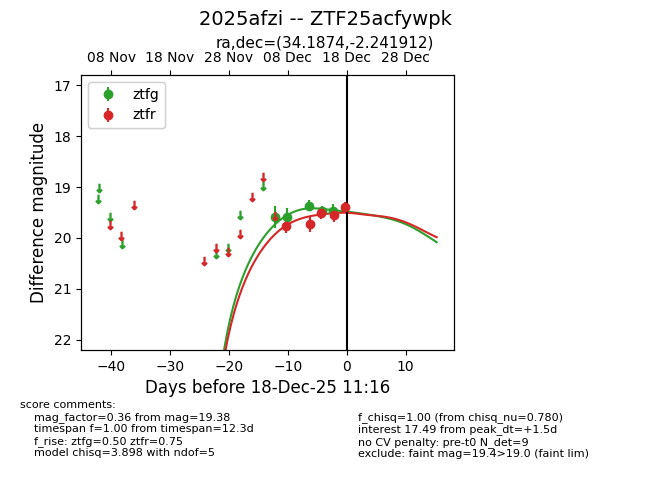
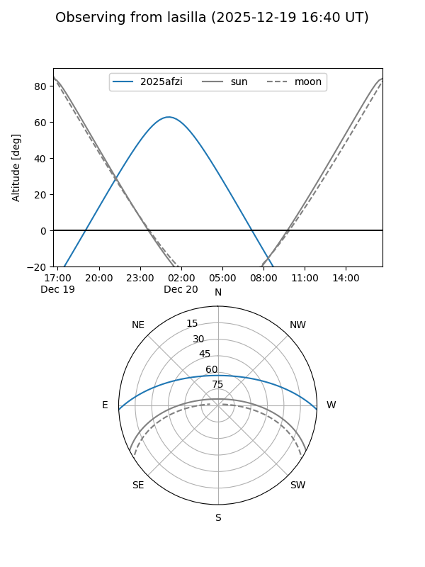
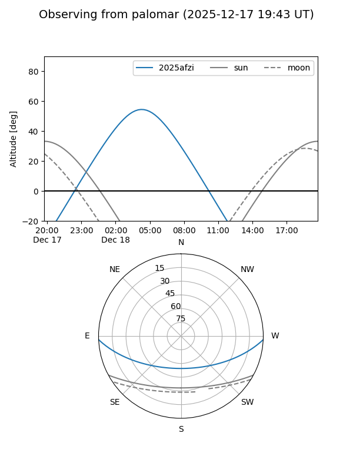
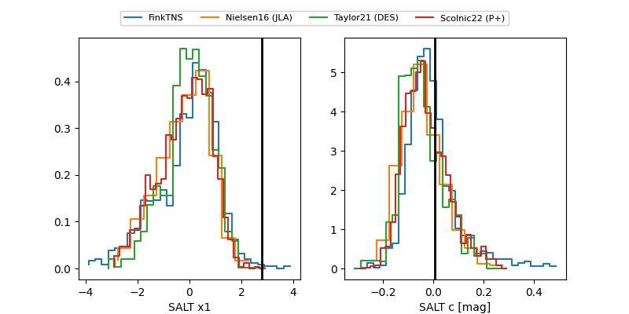

2025afzi
Target 2025afzi at 2025-12-20 04:14
Aliases and brokers:
FINK: fink-portal.org/ZTF25acfywpk
Lasair: lasair-ztf.lsst.ac.uk/objects/ZTF25acfywpk
ALeRCE: alerce.online/object/ZTF25acfywpk
TNS: wis-tns.org/object/2025afzi
YSE: ziggy.ucolick.org/yse/transient_detail/2025afzi
alt names
ZTF25acfywpk (ztf,fink_ztf)
2025afzi (tns,yse)
Coordinates:
equatorial (ra, dec) = 34.1874,-2.24191
equatorial (HMS+DMS) = 02:16:44.99,-02:14:30.88
galactic (l, b) = (165.9402,-57.80494)
Flags:
Photometry:
last ztfg=19.46, ztfr=19.57
6 ztfg, 6 ztfr detections
Lightcurve

Visibility


Additional plots
